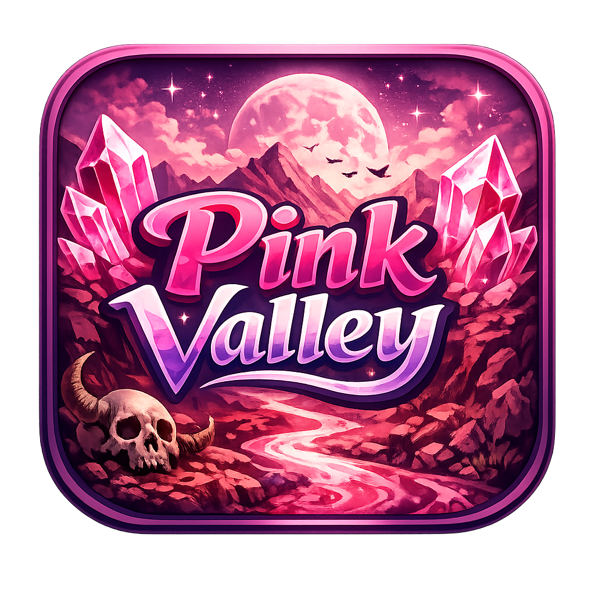
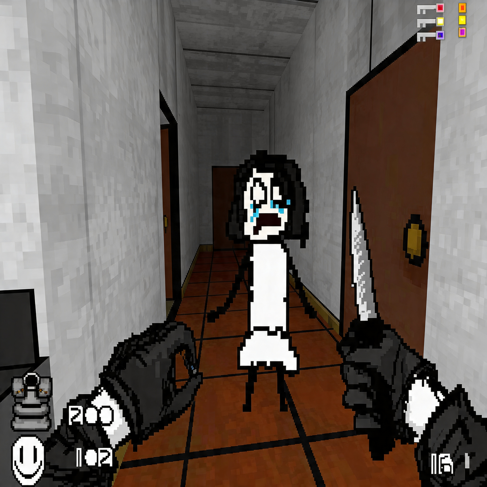
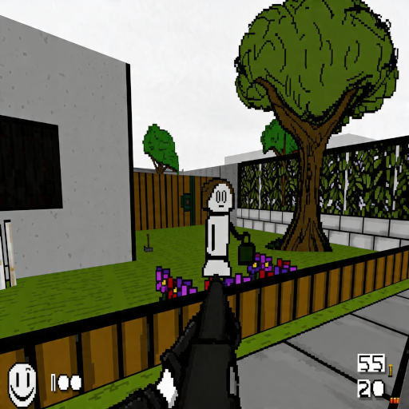

About
THE PINK VALLEY is a story-driven, experimental horror-action mod for Doom II, created by vamvilodon and designed for modern Doom source ports. It mixes classic combat with abstract storytelling, exploration-heavy levels, custom enemies, handmade weapons, and a visual identity built around fog, shadows, harsh contrasts, and uneasy pink spaces.
Features
- Full horror-action campaign for Doom II and Freedoom.
- Custom maps, enemies, weapons, items, sprites, music, and decorative assets.
- Exploration-focused levels with surreal storytelling and unsettling atmosphere.
- English version with translated map names, skill levels, obituaries, and selected textures.
Screenshots



Download
Download the latest package, extract the archive, and launch the included executable or run the mod through GZDoom with Doom II or Freedoom2.
Content Warning
THE PINK VALLEY contains horror themes, intense violence, flashing lights, harsh colors, loud audio, and emotionally heavy material.